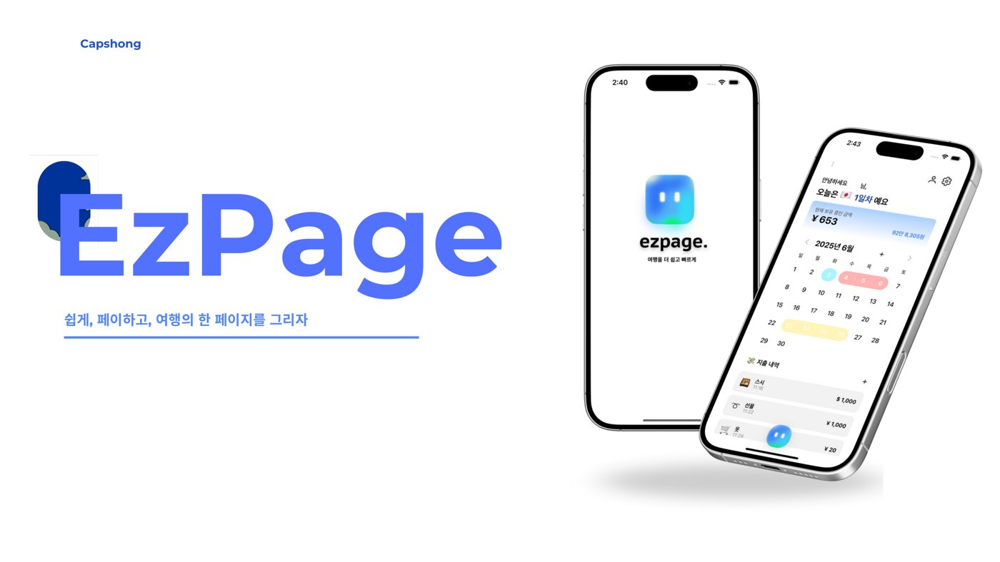
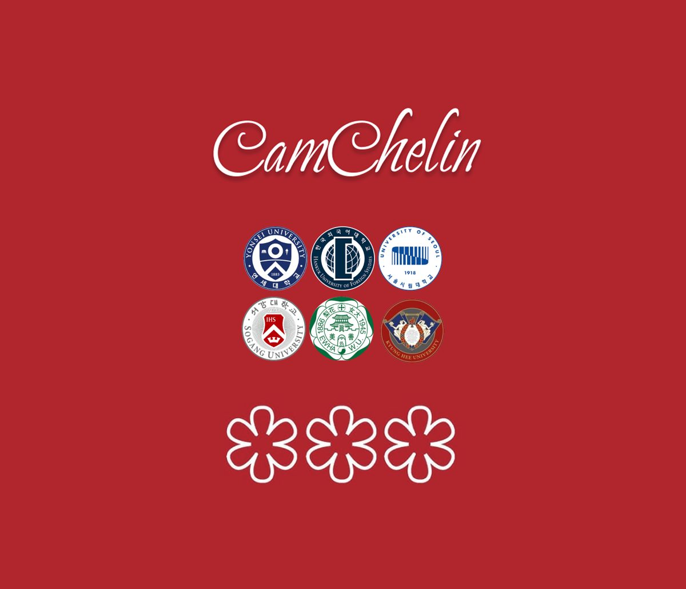

About
I care not only about building technology, but also about the value it creates for users.
With a background in AI Convergence, I have worked on projects involving natural language processing, computer vision, and generative AI. Through developing an AI-powered travel payment guide, a restaurant review analysis platform, and a medication management app, I gained experience in AI model development, product planning, and user-centered design.
These experiences taught me that strong technical performance matters, but solving real user problems is equally important. I am currently pursuing an M.S. in Management Information Systems at Seoul National University, where I study how AI can be effectively adopted and used in organizational settings.
Education
Seoul National University
M.S. in Business Administration (MIS) · IDSLab · GPA 4.10 / 4.3
Sungshin Women's University
B.S. in AI Convergence · GPA 4.09 / 4.5
Experience
Click a role to see details.
Summer Research Intern
NLP Lab, Sungkyunkwan University
Jul – Aug 2025
Summer Research Intern
NLP Lab, Sungkyunkwan University
- Validated a Korean–English QA dataset for the lab's multilingual QA research: checked each passage's English translation, rewrote ones that were wrong, missing, or cut off mid-sentence, and labeled whether each passage was relevant to its question.
- Built LDA and BERTopic pipelines on KoWiki and radio dialogue data, grouping dialogue into five-turn chunks so topics reflected the conversation. Chose the number of topics by coherence, compared the models on coherence, diversity, and silhouette scores, and explored Contextualized Topic Models (CTM).
- Studied RAG and generation methods (generative retrieval, chain-of-thought) and RL techniques for NLP (PPO, DPO, GRPO, RLHF) in weekly seminars.
- Validating QA data by hand showed me how easily translation and labeling errors enter a dataset, and turned my interest toward data quality for trustworthy AI systems.
- Advised by Prof. Youngjoong Ko.
AI Intern
Ssanyong Lift · Construction & Material Handling Equipment Company
Jun – Dec 2024
AI Intern
Ssanyong Lift · Construction & Material Handling Equipment Company
- Developed a prototype internal CS chatbot to help employees answer equipment troubleshooting and product inquiries without manually searching through multiple manuals. Organized PDF product manuals and real Naver TalkTalk inquiries by category, prepared JSONL training data, fine-tuned GPT-4o-mini, and built a Flask-based chatbot prototype.
- Tested the chatbot on real-world customer inquiries and identified hallucinations and inconsistent responses. The process exposed data-readiness challenges, including fragmented documentation and similar product names that were difficult to distinguish. The chatbot was not deployed because its responses were not sufficiently reliable for operational use.
- Developed an AI-assisted content creation guideline for the marketing team, combining Naver SEO keyword research, structured blog writing, ChatGPT and Wrtn prompts, and human verification of technical product information. Helped reduce blog-writing time from approximately 2 hours to 1 hour per post (50%).
- Gained firsthand insight into how data quality and organizational readiness shape the practical adoption of AI in SMEs, motivating my subsequent research interest in data quality for enterprise AI systems.
Undergraduate Researcher
AIDEN Lab, Sungshin Women's University
Jun 2024 – Dec 2025
Undergraduate Researcher
AIDEN Lab, Sungshin Women's University
- Took my first research question all the way to a paper: whether an Instagram image and its Korean hashtag are semantically consistent. It began as a UROP study and became a first-author manuscript with Prof. Jangmin Oh, now under revision.
- Rebuilt the dataset at scale: 12,011 image–hashtag pairs from 1,673 posts across 32 domains, scored on a 1–5 consistency scale by GPT-4o-mini under a written annotation guideline, with a self-consistency check of the labels.
- Found that my earlier results were inflated because images from the same post appeared in both training and test sets, and fixed it by splitting at the post level (StratifiedGroupKFold).
- Compared CLIP and KoCLIP under three training strategies against SVM and XGBoost baselines, evaluated with macro-F1 and per-class recall because the classes are imbalanced.
- Went through peer review: ran additional experiments for reviewers, revised the manuscript, and wrote the response letters.
- Presented and ran lab paper seminars, including a review of DiT (ICCV 2023). Studied diffusion models through Hugging Face's Diffusion Course and the diffusers library, and compared text-to-video models (Lumiere, Stable Video Diffusion).
- Advised by Prof. Jangmin Oh.
Individual Research (UROP)
Sungshin Women's University
Sep 2024 – Jan 2025
Individual Research (UROP)
Sungshin Women's University
- Started from a pattern I kept seeing on Instagram: brand hashtags such as #OliveYoungSale attached to posts unrelated to the brand. Set out to build a model that judges whether an image and its Korean hashtag actually match.
- Collected Instagram posts and hashtags myself and compared three strategies on CLIP and KoCLIP: similarity-based classification, a classifier on frozen embeddings, and full fine-tuning.
- English CLIP couldn't read Korean hashtags well, so I moved to KoCLIP. Matching posts far outnumbered mismatches, so I used cross-validation to keep minority cases in every split.
- Found that small crawled data and noisy hashtag labels limited the model more than the training strategy did.
- This study became the starting point of my first-author paper (see Undergraduate Researcher above).
Projects

Latest · Generative AI Course
VIZY — K-Beauty AI Agent
Matches makeup colors from face and product photos to real products, then personalizes and explains recommendations with a RAG-based agent.
GPT-4o-mini · RAG · pgvector · React
View project →
2nd Place · Codeit PowerBoost Demo Day
Momentum
Goal-management app that breaks big goals into daily “moments”, with GPT-based recommendations.
View project →
2nd Place · AI Convergence IT Competition
MediMate
Mobile app that reads drug labels with OCR and tracks expiration dates.
View project →
Capstone · Team Leader(PM)
Ezpage
AI-powered travel payment app that recognizes foreign currency and recommends payment combinations and expected change based on the cash in your wallet.
View project →
Google Solution Challenge 2024
To Be Mom
Health app for pregnant women with weekly checklists and a Gemini-powered chatbot.
View project →
NLP · Review Analysis
Camchelin
An AI-powered restaurant review platform that highlights both positive and negative feedback, helping students make more balanced dining decisions..
View project →NLP Competition · Dacon
Restoring Obfuscated Korean Reviews
Restored Jamo-level obfuscated reviews with Korean PLMs and a two-stage decoding design.
View project →Also: Diffusion Model Study · Course projects in Recommender Systems, Big Data Analysis, Data Structures
Honors
- Feb 2026Undergraduate Academic Excellence Scholarship (Year 4, 2nd Semester)
- Feb 20251st Codeit PowerBoost Demo Day — 2nd Place
- Feb 2025UROP Research Activity Scholarship
- Feb 2025Undergraduate Academic Excellence Scholarship (Year 3, 2nd Semester)
- Aug 2024AI Convergence Department IT Competition — 2nd Place, Upperclassmen Division
- Aug 2024Undergraduate Academic Excellence Scholarship (Year 3, 1st Semester)
Skills
- AI / ML
- PyTorch, Hugging Face Transformers, YOLOv8, OpenAI & Gemini APIs
- Programming
- Python, JavaScript, TypeScript, Kotlin, HTML/CSS
- Frameworks
- React, React Native
- Tools
- Git, Google Colab, VS Code, Figma
- Languages
- Korean (native), English (TOEIC 900, TEPS 342)
Contact
The best way to reach me is by email: jynoh825@gmail.com.